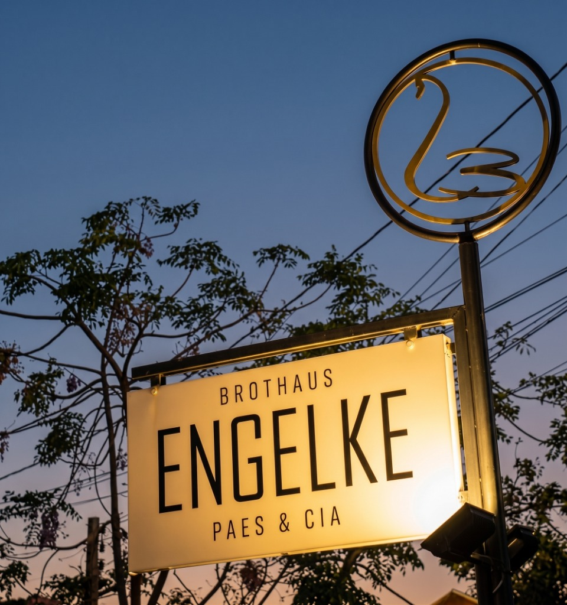
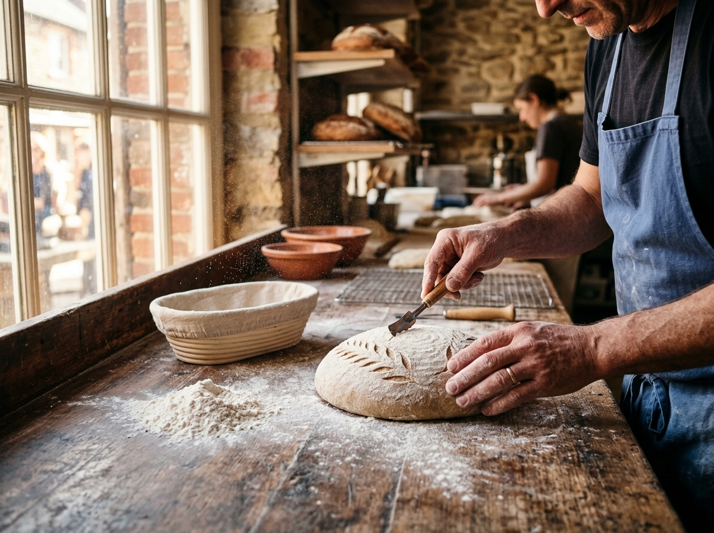
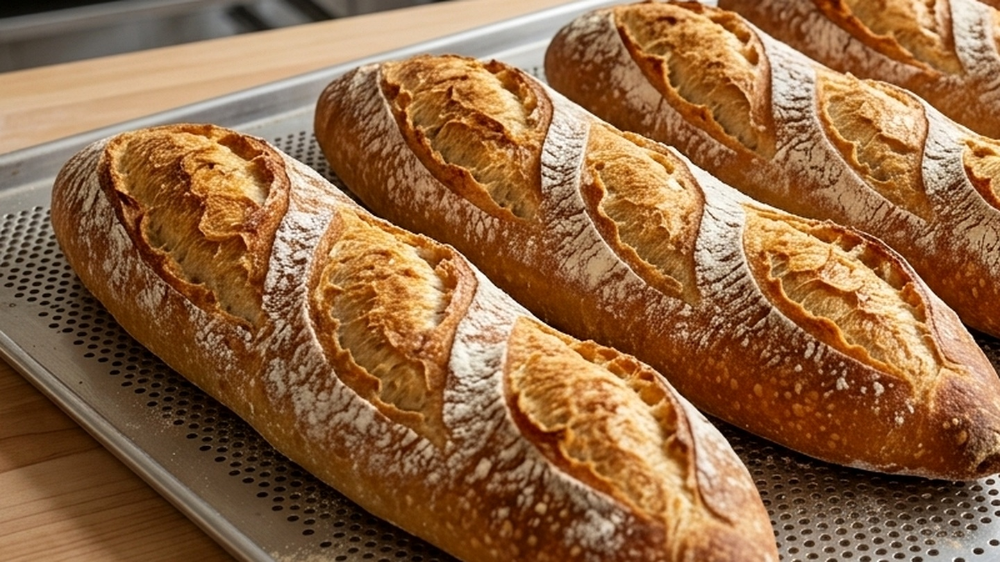
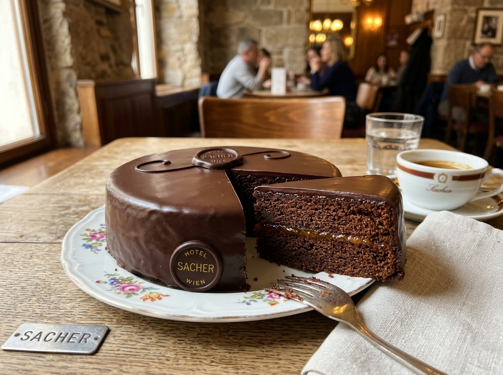
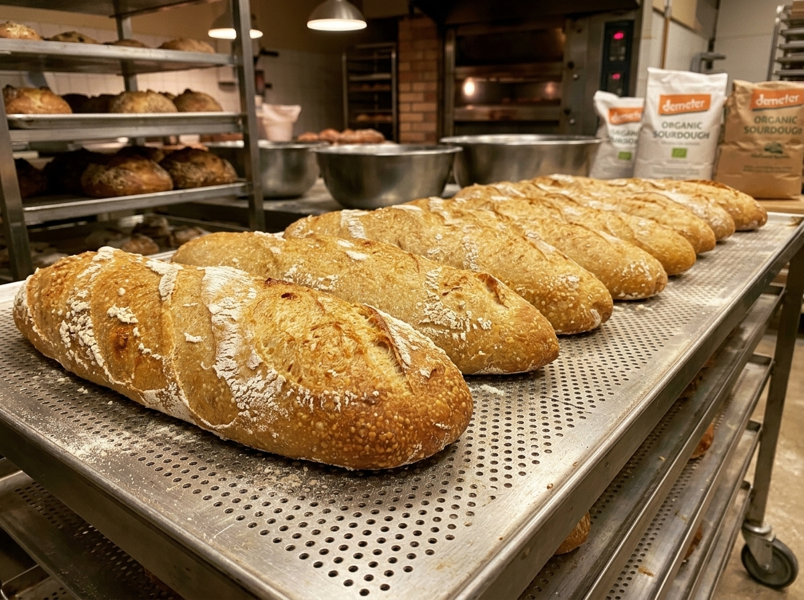

Boutique de
Pães Vivos.
O pão verdadeiro não aceita pressa. Grãos biodinâmicos puros, fermentação natural de 36 horas e o respeito absoluto ao solo e ao tempo das coisas bem feitas.





O ritmo dos astros e a regeneração do solo.
Assim como o astrolábio orienta o navegador pelas constelações, a agricultura biodinâmica respeita os ciclos da lua e do sol para colher grãos com vitalidade pura.
Certificação de Confiança Coletiva
Auditoria de pares entre agricultores e padeiros do Litoral Catarinense, garantindo trigo limpo de adubos químicos e livre de agrotóxicos.
Alimento que Conecta Campo e Cidade
Resgate do vínculo entre o homem e a terra, transformando o ato diário de comer pão em um gesto de saúde e consciência.
Na matéria inaugural que celebra os organismos pioneiros da Associação de Agricultura Biodinâmica do Sul (ABDSul), a Brothaus Engelke no Rio Tavares foi homenageada pelo rigor com fermentações lentas de 36 horas, grãos limpos de adubos químicos e compromisso vivo com a terra.
36 Horas de Fermentação Lenta.
Quatro matérias puras: farinha biodinâmica, água cristalina, sal marinho e colônias selvagens de leveduras cuidadas dia a dia com a paciência dos mestres.
Digestibilidade Perfeita
A fermentação lenta degrada o glúten naturalmente, eliminando o inchaço e criando notas aromáticas amendoadas que a panificação rápida jamais alcança.
A Crosta Caramelizada
Na temperatura exata do forno, os açúcares naturais do trigo caramelizam em tons dourados e âmbar, selando a crocância da crosta e a umidade do miolo aerado.
A Lendária Sachertorte de 1832.
Criada em Viena por Franz Sacher sob encomenda do príncipe Metternich. Massa nobre de cacau puro, entremeada por compota artesanal de damascos frescos e ganache espelhada.
Fornadas & Reservas
Como os pães têm fermentação de 36 horas, as fornadas são pontuais e limitadas. Reserve sua fornada antes que esgote.
| Dia | Horários | Fornada | Reserva |
|---|---|---|---|
| Quarta | 07h30 • 15h30 | Sourdough Demeter & Ciabattas | Reservar ↗ |
| Quinta | 07h30 • 15h30 | 100% Centeio Roggenbrot & Grãos | Reservar ↗ |
| Sexta | 07h30 • 15h30 | Pão de Nozes com Figos & Baguetes | Reservar ↗ |
| Sáb / Dom | 08h00 Especial | Sachertorte, Cestas & Cinnamon Rolls | Reservar ↗ |
Falar com Engelke & Gustavo
Selecione o item abaixo para abrir a conversa no WhatsApp já com seu pedido formulado: